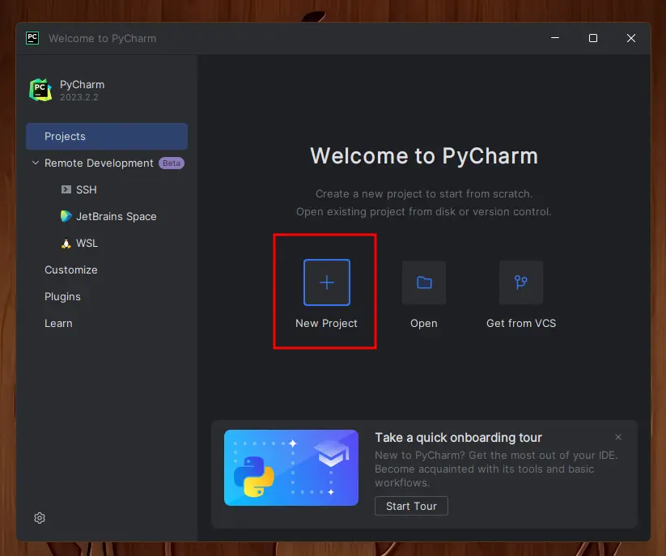
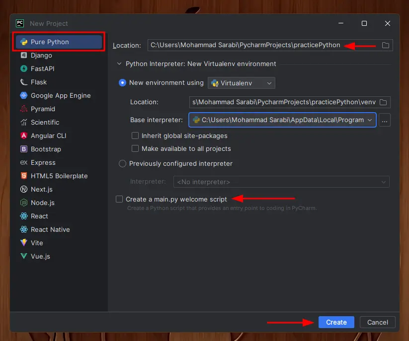
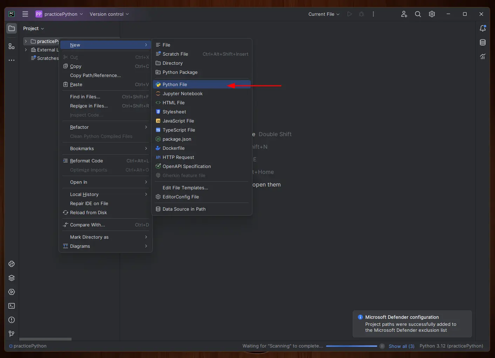
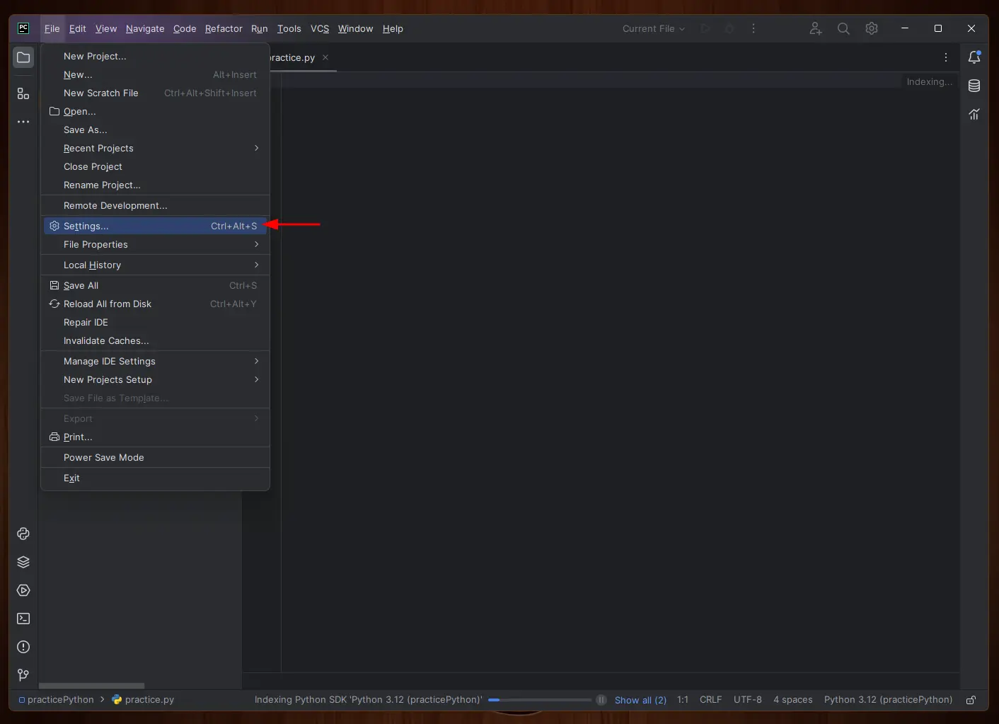
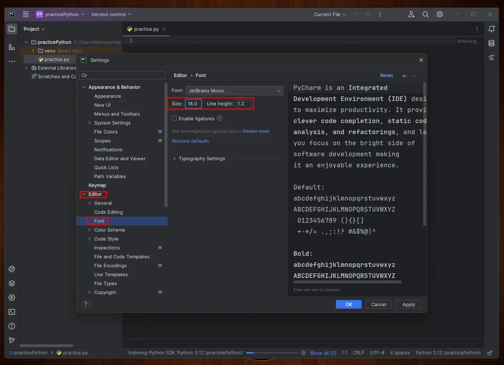
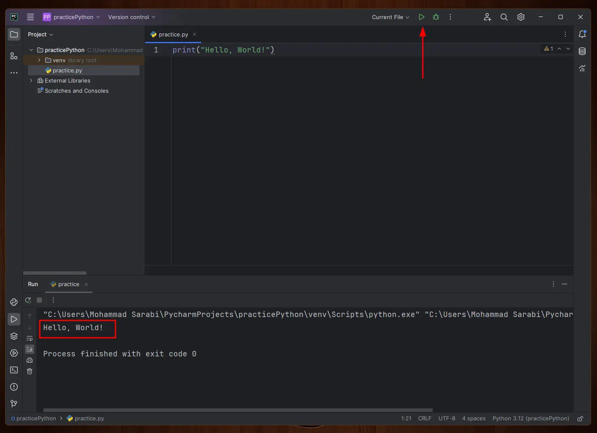

"double", 'single'
البته رشتهها رو میشه داخل سه تا کوتیشن پشت سر هم گذاشت که به این طریق میشه چند خط متن رو داخل یک str ذخیره
کرد:
text = "this is a string"
multiline_text = """This string can have multiple lines.
for that we use 3 quotation marks instead of one!"""
از سه تا کوتیشن برای کامنت گذاشتن چند خط و همچنین برای داکیومنت کردن در پایتون هم استفاده میشه.
برای وصل کردن چند str به هم از عملگر جمع
+
استفاده میکنیم.
حواستون باشه که string رشتهای از کاراکترهاست،
و یک فاصلهی خالی (space) هم یک کاراکتره.
پس اگر میخواید بین رشتهها فاصله باشه، باید یک فاصله هم به رشته بچسپونید:
text1 = "sun"
text2 = "flower"
full_text = text1 + text2
print(full_text)
#>> sunflower
forename = "John"
surname = "Doe"
# using a whitespace character to separate the two parts
full_name = forename + " " + surname
print(full_name)
#>> John Doe
همچنین از عملگر
*
هم میتونید روی رشتهها استفاده کنید تا رشته رو چند برابر کپی کنید.
text = "ha"
long_text = text * 5 # making 5 copies of the text variable
print(long_text)
#>> hahahahaha
قبلا دیدیم که میشه با عملگر جمع چند تا Str رو به هم وصل کرد. حالا اگر بخوایم چیزی غیر از str، مثلا یک عدد رو به یک رشته اضافه کرد چی؟ اگر بخوایم از علامت جمع استفاده کنیم، خطای TypeError خواهیم داشت:
country = "Iran"
year = 2023
print(country + year)
#>> TypeError: can only concatenate str (not "int") to str
اینجا باید عدد تبدیل به رشته بشه تا بتونه به رشته اضافه بشه. برای این کار میتونیم راههای مختلفی هست که یکی از اونها format string هست.
برای استفاده از formatted string قبل از کوتیشن یک f یا F قرار بدید
و داخل رشته، عبارت پایتون رو بین علامتهای
{}
بگذارید. این عبارت میتونه عدد، متغیر، محاسبات یا هر عبارت پایتونی باشه.
country = "Iran"
current_year = 2023
birth_year = 1993
print(f"I live in {country} in {current_year}. I am {current_year - birth_year} years old.")
#>> I live in Iran in 2023. I am 30 years old.
روشها دیگهای برای فرمت رشتهها هست که هرچند استفادهشون کمتره، ولی قطعا خواهید دید و بهتره باهاشون آشنا باشید:
استفاده از
str.format():
مثل f string، از علامت
{}
استفاده میکنیم، ولی مقداری داخلش نمینویسیم.
بعد از رشته، عبارتی که میخوایم داخل رشته قرار بگیره را به عنوان پارامتر به متد میدیم:
country = "Iran"
year = 2023
print("I live in {} in {}.".format(country, year))
#>> I live in Iran in 2023.
روش دیگه استفاده از فانکشن str() هست که سعی میکنه عبارت رو به رشته تبدیل کنه. اینطور میتونیم از concatenate برای چسپوندن رشتهها استفاده کنیم. از این روش معمولا برای نمایش سریع و برای دیباگ کردن استفاده میکنن.
current_year = 2023
print("It is year " + str(current_year))
#>> It is year 2023
روش دیگه استفاده از عملگر
%
هست که داره منسوخ میشه و پیشنهاد نمیشه،
واسه همین وارد جزییاتش نمیشم.
age = 27
height = 1.94
print("I have a %d years old brother. He is %.1f meters." % (age, height))
# >> I have a 27 years old brother. He is 1.9 meters.
نرمافزار PyCharm یکی از بهترین IDE ها برای پایتون هست که ابزارهای حرفهای برای کدنویسی در اختیارمون قرار میده. برای آموزش نصب نرمافزار پایتون از منوی سمت چپ PyCharm رو انتخاب کنید.
برای ساخت یک پروژه جدید و شروع کار با PyCharm، بعد از باز کردن برنامه از پنجرهی خوشامدگوییش گزینهی New Project رو انتخاب کنید.
بعد نوع پروژه رو Pure Python انتخاب کنید، از قسمت بالا مسیر ساخت پروژه و اسم پروژه رو وارد کنید، تیک ساخت main.py رو بردارید و Create رو بزنید
حالا کمی صبر کنید تا محیط مجازی ساخته بشه (قسمت پایین نشون میده که در حال ساخته). بعد از اون روی اسم پروژه راست کلیک کنید، New و بعد Python File رو انتخاب کنید. اسم فایل رو وارد کنید و Enter رو بزنید
اگر فونت برنامه رو میخواید تغییر بدید، از قسمت Settings برید توی Editor و Font
 برای نوشتن کد و اجراش، فایلی که ساختید رو انتخاب کنید، کدی که میخواید اجرا کنید رو بنویسید، و از قسمت بالا مثلث سبز رنگ ▷ رو بزنید تا خروجی توی قسمت پایین نمایش داده بشه.
بعضی کلیدهای میانبر کاربردی توی PyCharm:
Alt + Ctrl + L میتونید کد رو فرمت کنید
و بعضی خطاهای فاصلهگذاری و ... رو برطرف کنید.Alt + 4
میتونید ظاهرش کنید.Ctrl + D
خط رو کپی کنید.Ctrl + /
خط رو کامنت کنید.